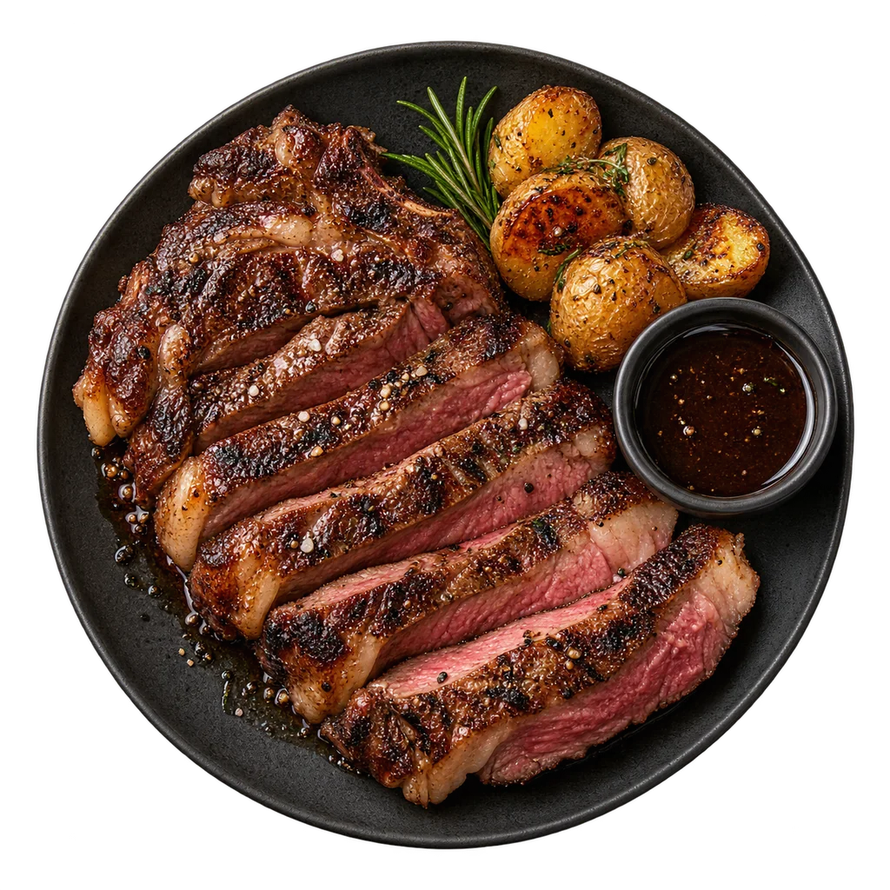

BARA SIGNATURE
DARI PANGGANGAN
Signature Ribeye
Rp189.000Ribeye, kentang panggang, rosemary,
dan saus lada hitam.
DI ATAS BARA. DENGAN SEPENUH HATI.
Ada rasa yang tak perlu banyak kata.
Daging yang dipanggang perlahan, bahan pilihan,
dan alasan untuk duduk sedikit lebih lama.
Good food. Better company.Rasa hangat, cerita yang dekat.

02 / CERITA KAMI
THE ART OF A GOOD MEAL.SESEDERHANA DUDUK BERSAMA.
BARA berangkat dari satu gagasan sederhana: makanan yang baik layak dinikmati tanpa terburu-buru. Ada karakter dari api, keseimbangan dari bahan, dan sentuhan kecil yang membuat sebuah hidangan terasa utuh.
Di meja BARA, kami membayangkan pertemuan yang dekat. Makan siang yang mengisi energi. Makan malam yang berubah menjadi cerita. Dan satu suapan terakhir yang ingin diulang.
Aroma panggang, tekstur, dan rasa yang seimbang.
Komposisi sederhana, setiap bahan punya peran.
Hidangan untuk dinikmati bersama orang terdekat.
03 / SEBELUM MEMILIH
Kenali pilihanmu sebelum menentukan
hidangan favorit.
Tekan “Detail hidangan” atau tombol tambah pada menu. Panel yang terbuka menampilkan deskripsi, komposisi, serta informasi alergen dari resep contoh.
Roasted Garden Vegetables, Garlic Butter Rice, dan Creamy Mushroom Soup adalah pilihan tanpa daging pada menu ini. Hidangan dengan mentega atau krim mengandung susu dan bukan menu vegan.
Di komputer, gerakkan penunjuk di atas sajian utama atau kartu menu. Pada sajian utama, fokuskan dengan tombol Tab lalu gunakan tombol panah. Di ponsel, sentuh dan geser sajian ke samping. Gunakan tombol “3D aktif” untuk mematikan gerakan kapan saja.
Situs ini menampilkan konsep menu BARA. Pemesanan dan reservasi belum tersedia.
GOOD FOOD. BETTER COMPANY.